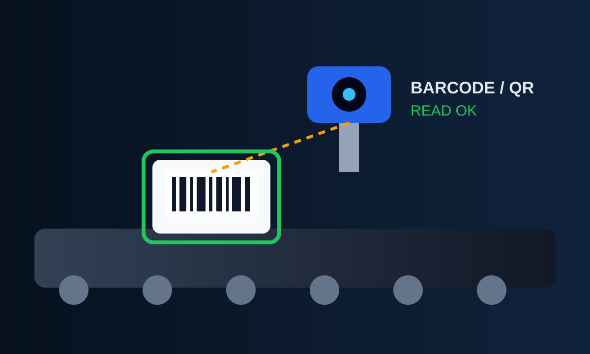
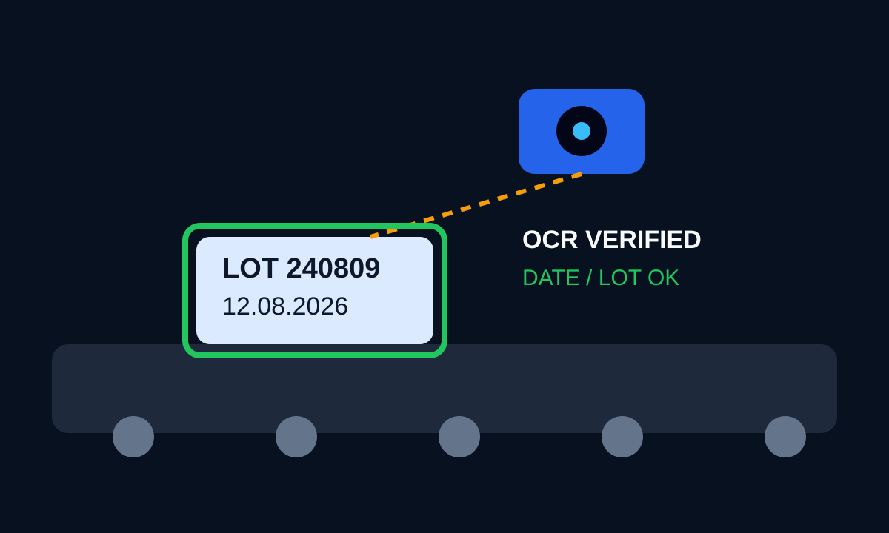
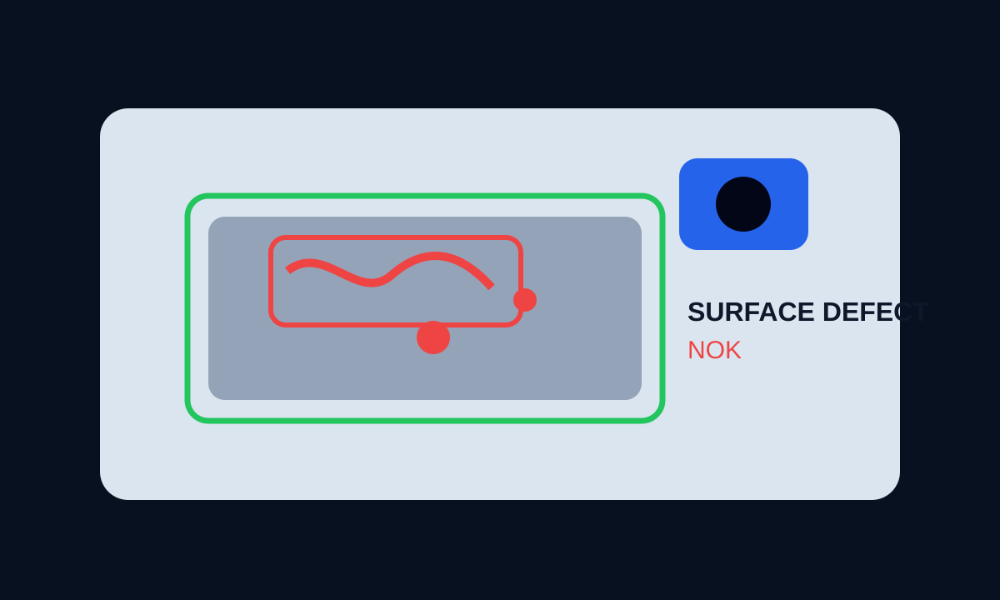

Główny filar Projekt-Automatyka
Systemy wizyjne, które widzą błędy zanim zobaczy je klient.
Projektujemy kompletne systemy vision: od kamery, optyki i oświetlenia, przez algorytmy obrazu i AI, aż po wynik OK/NOK w PLC, zapis zdjęć i raportowanie.

Po co kamera na produkcji?
Jeżeli operator może coś przeoczyć, kamera może to sprawdzać przy każdym detalu.
System wizyjny może zastąpić prostą kontrolę wzrokową albo wykonywać pomiary, których człowiek nie jest w stanie robić przy każdym cyklu.
Przykłady dla klienta
Co konkretnie może zrobić system wizyjny?
Nie trzeba znać kamer ani algorytmów. Wystarczy wskazać problem, który dziś sprawdza człowiek.

01
Kody kreskowe i QR
Kamera odczytuje kod, sprawdza poprawność produktu i może przesłać numer do PLC, MES lub bazy danych.
- identyfikacja produktu
- traceability
- kontrola właściwej etykiety

02
Data, numer partii i OCR
Automatyczna kontrola nadruku daty, numeru partii, znaków lub etykiety zanim produkt opuści stanowisko.
- kontrola daty ważności
- OCR / OCV
- wykrywanie braku nadruku

03
Wymiary, otwory i kontur
Kamera mierzy położenie, średnice, odległości lub porównuje kształt detalu z wzorcem CAD/DXF.
- kontrola geometrii
- pomiar 2D
- tolerancje OK/NOK

04
Robot widzi detal
Kamera znajduje detal na taśmie lub stole i przekazuje robotowi korektę pozycji oraz obrotu.
- pick&place
- losowa orientacja
- vision guidance

05
Kontrola montażu
Sprawdzenie obecności śrub, spinek, uszczelek, otworów, elementów wyposażenia albo poprawnego wariantu produktu.
- poka-yoke
- kontrola kompletności
- redukcja reklamacji

06
Kontrola powierzchni
Wykrywanie rys, zabrudzeń, wad nadruku, braków materiału, przebarwień i innych defektów widocznych na obrazie.
- wady kosmetyczne
- powtarzalna klasyfikacja
- AI gdy klasyczne metody nie wystarczą
Jedna kamera — wiele zadań
System dopasowujemy do procesu, nie odwrotnie.
Od prostego sprawdzenia obecności elementu po pomiary, identyfikację produktu i prowadzenie robota. Dobieramy kamerę, optykę, światło i algorytm pod konkretny detal oraz tempo produkcji.


Trzy poziomy rozwiązania
Od prostej smart kamery do własnego systemu AI.
Smart camera
Gotowa kamera przemysłowa do prostych i szybkich kontroli: obecność, kod, pozycja, podstawowe pomiary.
Dobre gdy:zadanie jest dobrze zdefiniowane i liczy się szybkie wdrożenie.Industrial camera + komputer
Większa elastyczność, własne algorytmy OpenCV/Python, zaawansowane pomiary, archiwizacja i integracja.
Dobre gdy:system ma być dokładnie dopasowany do procesu.NVIDIA Jetson / AI
Edge AI do detekcji obiektów, klasyfikacji i problemów, których nie da się stabilnie rozwiązać prostymi regułami.
Dobre gdy:produkt lub wada ma dużą zmienność.Od problemu do stanowiska
Jak powstaje system wizyjny?
Najpierw sprawdzamy detal i warunki procesu. Kamera jest dopiero kolejnym krokiem.
Test detalu
Zdjęcia próbek OK/NOK i ocena, czy wada jest widoczna i powtarzalna.
Optyka i światło
Dobór pola widzenia, obiektywu i oświetlenia tak, aby wada była jednoznaczna.
Algorytm
Pomiar, detekcja, OCR, AI lub kombinacja metod z ustawieniem tolerancji.
Integracja
PLC/HMI, wynik OK/NOK, odrzut produktu, logi, zdjęcia i uruchomienie na linii.